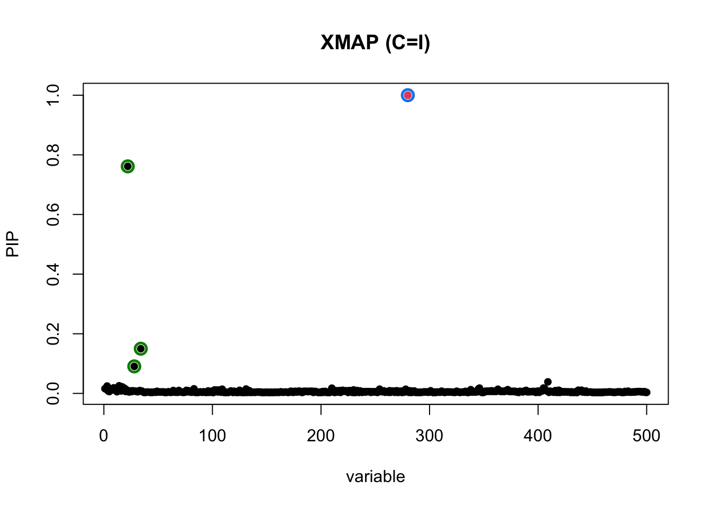
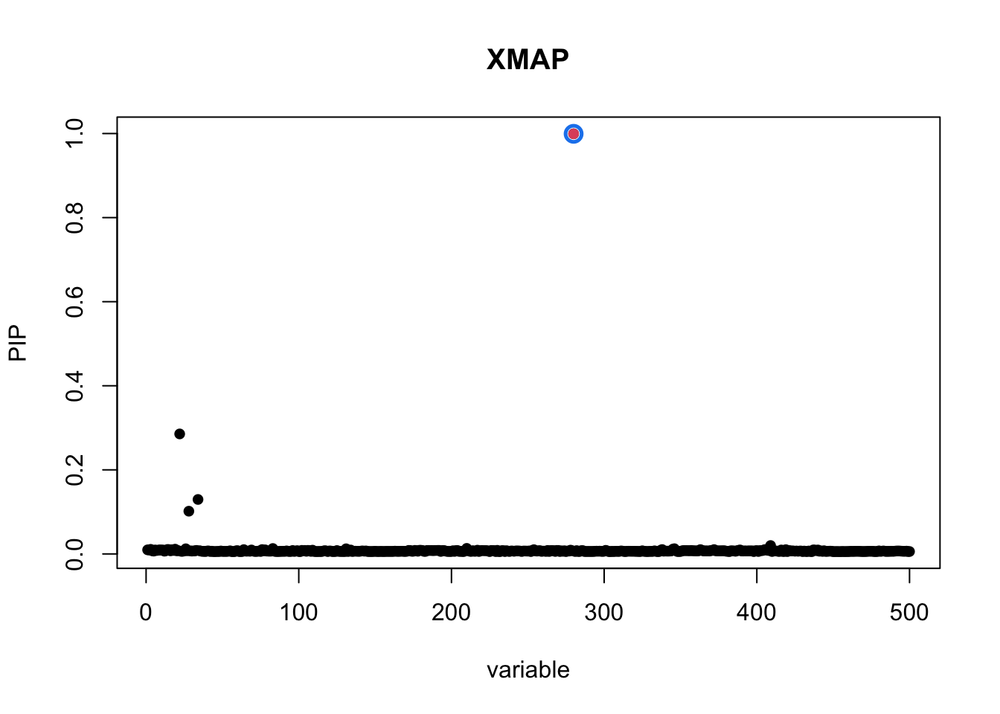

Last updated: 2024-04-30
Checks: 7 0
Knit directory: XMAP-tutorial/
This reproducible R Markdown analysis was created with workflowr (version 1.7.0). The Checks tab describes the reproducibility checks that were applied when the results were created. The Past versions tab lists the development history.
Great! Since the R Markdown file has been committed to the Git repository, you know the exact version of the code that produced these results.
Great job! The global environment was empty. Objects defined in the global environment can affect the analysis in your R Markdown file in unknown ways. For reproduciblity it’s best to always run the code in an empty environment.
The command set.seed(20230213) was run prior to running
the code in the R Markdown file. Setting a seed ensures that any results
that rely on randomness, e.g. subsampling or permutations, are
reproducible.
Great job! Recording the operating system, R version, and package versions is critical for reproducibility.
Nice! There were no cached chunks for this analysis, so you can be confident that you successfully produced the results during this run.
Great job! Using relative paths to the files within your workflowr project makes it easier to run your code on other machines.
Great! You are using Git for version control. Tracking code development and connecting the code version to the results is critical for reproducibility.
The results in this page were generated with repository version 87493aa. See the Past versions tab to see a history of the changes made to the R Markdown and HTML files.
Note that you need to be careful to ensure that all relevant files for
the analysis have been committed to Git prior to generating the results
(you can use wflow_publish or
wflow_git_commit). workflowr only checks the R Markdown
file, but you know if there are other scripts or data files that it
depends on. Below is the status of the Git repository when the results
were generated:
Ignored files:
Ignored: .DS_Store
Ignored: .Rhistory
Ignored: .Rproj.user/
Ignored: data/.DS_Store
Note that any generated files, e.g. HTML, png, CSS, etc., are not included in this status report because it is ok for generated content to have uncommitted changes.
These are the previous versions of the repository in which changes were
made to the R Markdown (analysis/Vignettes.Rmd) and HTML
(docs/Vignettes.html) files. If you’ve configured a remote
Git repository (see ?wflow_git_remote), click on the
hyperlinks in the table below to view the files as they were in that
past version.
| File | Version | Author | Date | Message |
|---|---|---|---|---|
| html | 0174f6d | mxcai | 2024-04-29 | add example |
| Rmd | 6b2e672 | mxcai | 2024-04-29 | Update Vignettes.Rmd |
| Rmd | 6eff465 | mxcai | 2024-04-29 | add toggle |
| html | 6eff465 | mxcai | 2024-04-29 | add toggle |
| html | ab6d949 | mxcai | 2023-02-15 | Build site. |
| html | 1a72356 | mxcai | 2023-02-14 | Build site. |
| Rmd | 91ed24b | mxcai | 2023-02-14 | add |
| html | 91ed24b | mxcai | 2023-02-14 | add |
| Rmd | 81bc3f6 | mxcai | 2023-02-13 | add |
| html | 81bc3f6 | mxcai | 2023-02-13 | add |
We start with a simulated data set for demonstrating the usage of XMAP software. This data set comprises a locus of 500 SNPs, among which 3 are causal.
library(susieR)
library(XMAP)
data("example_data")
par(mfrow = c(1, 2))
par(mar=c(3,3,2,1))
susie_plot(zs1, "z", b = Beta_true[, 1], main = "EAS GWAS",ylab="",xlab="")
title(ylab="-log10(p)",xlab="variant",line=2)
susie_plot(zs2, "z", b = Beta_true[, 2], main = "EUR GWAS",ylab="",xlab="")
title(ylab="-log10(p)",xlab="variant",line=2)
| Version | Author | Date |
|---|---|---|
| 81bc3f6 | mxcai | 2023-02-13 |
The above manhattan plots show the p-values of GWASs in EAS and EUR with red dots representing the 3 causal SNPs.
This data set is simulated without confounding bias. For demonstration, we apply XMAP by setting \(c_1=c_2=1\) here.
fit_xmap <- XMAP(simplify2array(list(R1,R2)), cbind(zs1,zs2),
n=c(20000,20000), K = 5,
Omega = OmegaHat,
Sig_E = c(1,1),
tol = 1e-6,
maxIter = 200, estimate_residual_variance = F, estimate_prior_variance = T,
estimate_background_variance = F)To visualize the results, we plot the PIP and credible sets obtained by XMAP
# Get credible set based on R1
cs1 <- get_CS(fit_xmap, Xcorr = R1, coverage = 0.95, min_abs_corr = 0.1)
# Get credible set based on R2
cs2 <- get_CS(fit_xmap, Xcorr = R2, coverage = 0.95, min_abs_corr = 0.1)
# Get joint credible set
cs <- cs1$cs[intersect(names(cs1$cs), names(cs2$cs))]
pip <- get_pip(fit_xmap$gamma)
plot_CS(pip, cs, Beta_true[,1], main = "XMAP")
In the above figure, the red dot is the only causal SNP, level-95% credible sets are colored circles. By combining EAS and EUR GWASs, XMAP successfully identifies two true causal signals with high confidence.
Here, we provide an example of using XMAP for correcting confounding bias in cross-population GWAS data. We simulated GWAS data with confounding effects. For demonstration, we assume that we have estimated the inflation constants \(c_1=1.636171\) and \(c_2=1.791455\), and the polygenic parameters \(\Omega\) using bi-variate LDSC (See next section for details in estimating these parameters in real GWAS data).
We first fit XMAP without correcting confounding bias by setting \(c_1=c_2=1\):
data("example_data_confound")
c1 <- 1.636171
c2 <- 1.791455
fit_xmapI <- XMAP(simplify2array(list(R1,R2)), cbind(zs1,zs2),
n=c(15000,20000), K = 5,
Omega = OmegaHat,
Sig_E = c(1,1),
tol = 1e-6,
maxIter = 200, estimate_residual_variance = F, estimate_prior_variance = T,
estimate_background_variance = F)
# Get credible set based on R1
cs1 <- get_CS(fit_xmapI, Xcorr = R1, coverage = 0.95, min_abs_corr = 0.1)
# Get credible set based on R2
cs2 <- get_CS(fit_xmapI, Xcorr = R2, coverage = 0.95, min_abs_corr = 0.1)
# Get joint credible set
cs <- cs1$cs[intersect(names(cs1$cs), names(cs2$cs))]
pip <- get_pip(fit_xmapI$gamma)
plot_CS(pip, cs, Beta_true[,1], main = "XMAP (C=I)")
In the above figure, the red dot is the only causal SNP, level-95% credible sets are colored circles. Without correcting for confounding bias, some null SNPs on the left region of the locus can have high PIP. These are false positives.
Now, we use the estimated LDSC intercepts to correct the confounding bias in XMAP:
c1 <- 1.636171
c2 <- 1.791455
fit_xmap <- XMAP(simplify2array(list(R1,R2)), cbind(zs1,zs2),
n=c(15000,20000), K = 5,
Omega = OmegaHat,
Sig_E = c(c1,c2),
tol = 1e-6,
maxIter = 200, estimate_residual_variance = F, estimate_prior_variance = T,
estimate_background_variance = F)
# Get credible set based on R1
cs1 <- get_CS(fit_xmap, Xcorr = R1, coverage = 0.95, min_abs_corr = 0.1)
# Get credible set based on R2
cs2 <- get_CS(fit_xmap, Xcorr = R2, coverage = 0.95, min_abs_corr = 0.1)
# Get joint credible set
cs <- cs1$cs[intersect(names(cs1$cs), names(cs2$cs))]
pip <- get_pip(fit_xmap$gamma)
plot_CS(pip, cs, Beta_true[,1], main = "XMAP")
As we can observe, XMAP effectively reduces the PIP of spurious signals and correctly excludes them from the level-95% credible sets.
In this example, we show the complete pipeline of using XMAP to identify causal SNPs by using real GWAS data. As an example, we use LDL GWASs from AFR and EUR. The files involved are:
The XMAP analysis involves two steps. We first estimate the polygenic parameters and inflation constants using GWAS summary data from the whole genome. Then we fix these parameters and use variational inference to evaluate the posteriror inclusion probability of SNPs in the target locus. In this example, we focus on the SNP rs900776 that was previously reported to be related with LDL. This SNP is located at the locus defined by base pair 20000001-23000001 in Chromosome 8. We provide the AFR and EUR LD matrices of this locus estimated from UK Biobank genotypes with the link given in the XMAP GitHub page.
library(XMAP)
library(susieR)
library(data.table)
library(Matrix)
set.seed(1)We first apply bi-variate LDCS to estimate the inflation constants and parameters of polygenic effects. We need GWASs Z-scores of the whole genome from AFR and EUR, and their LD scores as input.
We first read GWAS summary statistics and LD scores.
# read GWAS summary statistics
sumstat_EUR <- fread("/Users/cmx/Documents/Research/Project/Fine_Mapping/sumstats/LDL_allSNPs_UKBNealLab_summary_format.txt")
sumstat_AFR <- fread("/Users/cmx/Documents/Research/Project/Fine_Mapping/sumstats/LDL_AFR_GLGC_summary_format.txt")
# read LD scores
ldscore <- data.frame()
for (chr in 1:22) {
ldscore_chr <- fread(paste0("/Users/cmx/Documents/Research/Project/Fine_Mapping/LD_ref/LD_score/LDscore_eas_brit_afr_chr", chr, ".txt"))
ldscore <- rbind(ldscore, ldscore_chr)
cat("CHR", chr, "\n")
}
# pre-process: remove ambiguous SNPs
idx_amb <- which(ldscore$allele1 == comple(ldscore$allele2))
ldscore <- ldscore[-idx_amb,]
# pre-process: overlap SNPs
snps <- Reduce(intersect, list(ldscore$rsid, sumstat_AFR$SNP, sumstat_EUR$SNP))
sumstat_AFR_ldsc <- sumstat_AFR[match(snps, sumstat_AFR$SNP),]
sumstat_EUR_ldsc <- sumstat_EUR[match(snps, sumstat_EUR$SNP),]
ldscore <- ldscore[match(snps, ldscore$rsid),]
# pre-process: flip alleles
z_afr <- sumstat_AFR_ldsc$beta / sumstat_AFR_ldsc$se
z_eur <- sumstat_EUR_ldsc$Z
idx_flip <- which(sumstat_AFR_ldsc$A1 != ldscore$allele1 & sumstat_AFR_ldsc$A1 != comple(ldscore$allele1))
z_afr[idx_flip] <- -z_afr[idx_flip]
idx_flip <- which(sumstat_EUR_ldsc$A1 != ldscore$allele1 & sumstat_EUR_ldsc$A1 != comple(ldscore$allele1))
z_eur[idx_flip] <- -z_eur[idx_flip]
idx1 <- which(z_afr^2 < 30 & z_eur^2 < 30)
ld_afr_w <- 1 / sapply(ldscore$AFR, function(x) max(x, 1))
ld_eur_w <- 1 / sapply(ldscore$EUR, function(x) max(x, 1))Then we apply bi-variate LDSC to estimate polygenic and confounding parameters. The two-stage LDSC is used here.
# bi-variate LDSC: AFR-EUR
# stage 1 of LDSC: estimate intercepts
fit_step1 <- estimate_gc(data.frame(Z = z_afr[idx1], N = sumstat_AFR_ldsc$N[idx1]), data.frame(Z = z_eur[idx1], N = sumstat_EUR_ldsc$N[idx1]),
ldscore$AFR[idx1], ldscore$EUR[idx1], ldscore$AFR_EUR[idx1],
reg_w1 = ld_afr_w[idx1], reg_w2 = ld_eur_w[idx1], reg_wx = sqrt(ld_afr_w[idx1] * ld_eur_w[idx1]),
constrain_intercept = F)
# stage 2 of LDSC: fix intercepts and estimate slopes
fit_step2 <- estimate_gc(data.frame(Z = z_afr, N = sumstat_AFR_ldsc$N), data.frame(Z = z_eur, N = sumstat_EUR_ldsc$N),
ldscore$AFR, ldscore$EUR, ldscore$AFR_EUR,
reg_w1 = ld_afr_w, reg_w2 = ld_eur_w, reg_wx = sqrt(ld_afr_w * ld_eur_w),
constrain_intercept = T, fit_step1$tau1$coefs[1], fit_step1$tau2$coefs[1], fit_step1$theta$coefs[1])We now extract the LDSC output and construct \(\hat{\Omega}\) and \(c_1\), \(c_2\) for XMAP analysis
# Assign LDSC estimates to covariance of polygenic effects
OmegaHat <- diag(c(fit_step2$tau1$coefs[2], fit_step2$tau2$coefs[2])) # AFR EUR
OmegaHat[1, 2] <- fit_step2$theta$coefs[2] # co-heritability
OmegaHat[lower.tri(OmegaHat)] <- OmegaHat[upper.tri(OmegaHat)]
c1 <- fit_step2$tau1$coefs[1] # AFR
c2 <- fit_step2$tau2$coefs[1] # EURGiven the estimated polygenic parameters and inflation constants, we use variational inference to combine cross-population GWASs and evaluate PIP for SNP in the target locus. We need LD matrices and GWAS Z-scores from AFR and EUR as input.
First, we load the reference LD matrices of EUR and AFR populations estimated from UKBB samples, extract overlapped SNPs, conduct quality control, and align the effect alleles.
# read loci information
info <- fread("/Users/cmx/Documents/Research/Project/Fine_Mapping/LD_ref/LD_mat/chr8_20000001_23000001.info")
# detect allele ambiguous SNPs
idx_amb <- which(info$allele1 == comple(info$allele2))
# overlap SNPs
snps <- Reduce(intersect, list(info$rsid[-idx_amb], sumstat_AFR$SNP, sumstat_EUR$SNP))
sumstat_AFR_i <- sumstat_AFR[match(snps, sumstat_AFR$SNP),]
sumstat_EUR_i <- sumstat_EUR[match(snps, sumstat_EUR$SNP),]
# read LD matrix of AFR
R_afr <- readMM("/Users/cmx/Documents/Research/Project/Fine_Mapping/LD_ref/LD_mat/chr8_20000001_23000001_afr.mtx.gz")
R_afr <- as.matrix(R_afr + t(R_afr))
idx_afr <- match(snps, info$rsid)
R_afr <- R_afr[idx_afr, idx_afr]
# read LD matrix of EUR
R_brit <- readMM("/Users/cmx/Documents/Research/Project/Fine_Mapping/LD_ref/LD_mat/chr8_20000001_23000001_brit.mtx.gz")
R_brit <- as.matrix(R_brit + t(R_brit))
idx_brit <- match(snps, info$rsid)
R_brit <- R_brit[idx_brit, idx_brit]
info <- info[match(snps, info$rsid),]
# remove SNPs with small GWAS sample size
idx_outlier_EUR <- which(sumstat_EUR_i$N < 0.7 * median(sumstat_EUR_i$N))
idx_outlier_AFR <- which(sumstat_AFR_i$N < 0.7 * median(sumstat_AFR_i$N))
idx_outlier <- unique(c(idx_outlier_EUR, idx_outlier_AFR))
snps <- snps[-idx_outlier]
sumstat_AFR_i <- sumstat_AFR_i[-idx_outlier,]
sumstat_EUR_i <- sumstat_EUR_i[-idx_outlier,]
info <- info[-idx_outlier,]
R_afr <- R_afr[-idx_outlier, -idx_outlier]
R_brit <- R_brit[-idx_outlier, -idx_outlier]
# flip alleles
z_afr <- sumstat_AFR_i$beta / sumstat_AFR_i$se
z_eur <- sumstat_EUR_i$Z
idx_flip <- which(sumstat_AFR_i$A1 != info$allele1 & sumstat_AFR_i$A1 != comple(info$allele1))
z_afr[idx_flip] <- -z_afr[idx_flip]
idx_flip <- which(sumstat_EUR_i$A1 != info$allele1 & sumstat_EUR_i$A1 != comple(info$allele1))
z_eur[idx_flip] <- -z_eur[idx_flip]Then, we run XMAP to obtain the PIP and credible sets
# Main XMAP analysis
xmap <- XMAP(simplify2array(list(R_brit, R_afr)), cbind(z_eur, z_afr), n=c(median(sumstat_EUR_i$N), median(sumstat_AFR_i$N)),
K = 10, Omega = OmegaHat, Sig_E = c(c1, c2), tol = 1e-6,
maxIter = 200, estimate_residual_variance = F, estimate_prior_variance = T,
estimate_background_variance = F)To visualize the results, we plot the PIP and credible sets obtained by XMAP
cs1 <- get_CS(xmap, Xcorr = R_afr, coverage = 0.9, min_abs_corr = 0.1)
cs2 <- get_CS(xmap, Xcorr = R_brit, coverage = 0.9, min_abs_corr = 0.1)
cs_xmap <- cs1$cs[intersect(names(cs1$cs), names(cs2$cs))]
pip_xmap <- get_pip(xmap$gamma)plot_CS(pip_xmap, cs_xmap, main = "XMAP",b = (info$rsid == "rs900776"))
| Version | Author | Date |
|---|---|---|
| 81bc3f6 | mxcai | 2023-02-13 |
The PIP of SNP rs900776 is 0.99 as computed by XMAP.
sessionInfo()R version 4.1.2 (2021-11-01)
Platform: aarch64-apple-darwin20 (64-bit)
Running under: macOS 13.6.3
Matrix products: default
BLAS: /opt/homebrew/Cellar/openblas/0.3.19/lib/libopenblasp-r0.3.19.dylib
LAPACK: /Library/Frameworks/R.framework/Versions/4.1-arm64/Resources/lib/libRlapack.dylib
locale:
[1] en_US.UTF-8/en_US.UTF-8/en_US.UTF-8/C/en_US.UTF-8/en_US.UTF-8
attached base packages:
[1] stats graphics grDevices utils datasets methods base
other attached packages:
[1] Matrix_1.5-4.1 data.table_1.14.2 XMAP_1.0 susieR_0.12.35
loaded via a namespace (and not attached):
[1] tidyselect_1.2.0 xfun_0.32 bslib_0.4.0 lattice_0.20-45
[5] colorspace_2.0-2 vctrs_0.6.3 generics_0.1.1 htmltools_0.5.4
[9] yaml_2.3.5 utf8_1.2.2 rlang_1.1.1 mixsqp_0.3-43
[13] jquerylib_0.1.4 later_1.3.0 pillar_1.9.0 glue_1.6.2
[17] RcppZiggurat_0.1.6 matrixStats_0.61.0 lifecycle_1.0.3 plyr_1.8.6
[21] stringr_1.4.1 munsell_0.5.0 gtable_0.3.0 workflowr_1.7.0
[25] evaluate_0.16 knitr_1.40 fastmap_1.1.0 httpuv_1.6.5
[29] parallel_4.1.2 irlba_2.3.5 fansi_0.5.0 Rfast_2.0.6
[33] highr_0.9 Rcpp_1.0.10 promises_1.2.0.1 scales_1.1.1
[37] cachem_1.0.6 jsonlite_1.8.0 fs_1.5.2 ggplot2_3.3.5
[41] digest_0.6.29 stringi_1.7.8 dplyr_1.1.2 rprojroot_2.0.2
[45] grid_4.1.2 cli_3.6.1 tools_4.1.2 magrittr_2.0.3
[49] sass_0.4.2 tibble_3.2.1 crayon_1.5.1 whisker_0.4
[53] pkgconfig_2.0.3 rmarkdown_2.16 reshape_0.8.8 rstudioapi_0.13
[57] R6_2.5.1 git2r_0.31.0 compiler_4.1.2